Пример.Необходимо провести номенклатурный анализ продаж по отгрузкам за календарный месяц контрагентов Инвема и Дальстрой.
1. Откройте отчет Продажи. Для этого выберете пункт меню Отчеты - Продажи - Анализ продаж - Продажи.
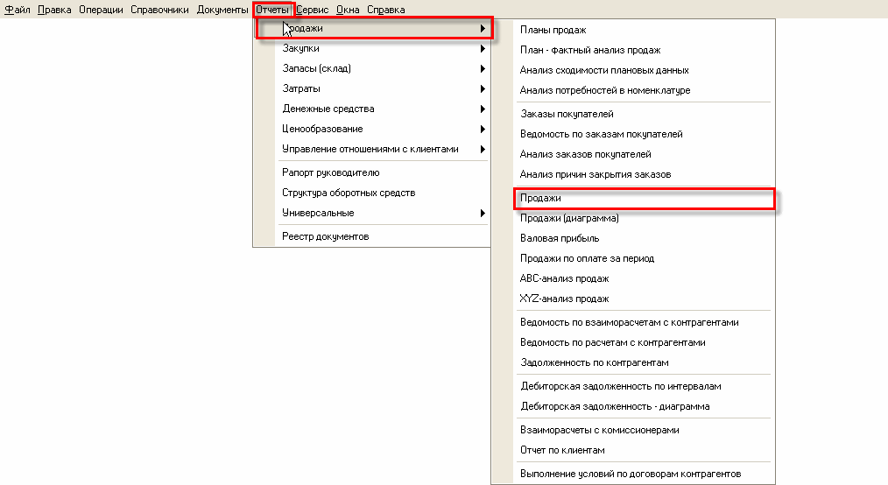
2. Настройте отчет для поставленных целей. Для этого на панели отчета нажмите кнопку Настройки.
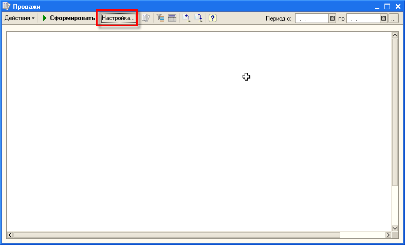
3. Откроется форма настройки отчета. В данной форме заполните Период отчета, Параметры, Показатели, Группировки (Группировки строк, Группировки колонок) и Отборы отчета.
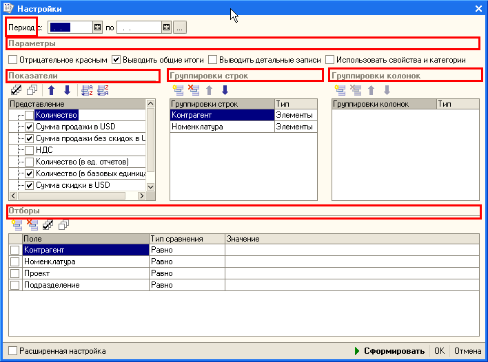
Период отчета 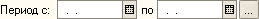 можно выбрать с помощью формы Настройка периода, нажав кнопку .
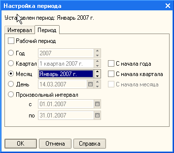
Параметры отчета влияют на его оформление. Редактирование параметров выполняется с помощью заполнение элемента , соответствующего параметра.
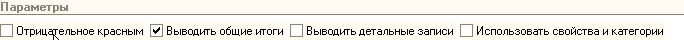
Выбор выводимых Показателей отчета производится в соответствующем элементе формы
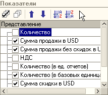,
заполняя элементы необходимых показателей. Порядок вывода показателей в отчете настраивается на командной панели Показателей отчета с помощью элементов управления 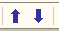.
Настройки Группировок отчета находятся в таблицах формы
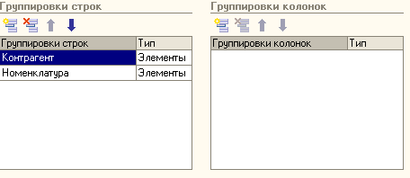
В отчете можно проводить анализ по любым группировкам, которые выводятся либо в строках отчета, либо в его колонках. Порядок вложенности группировок определяется их положением в таблице группировок. Для того, чтобы добавить новую группировку, необходимо нажать 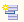 , расположенной на командной панели таблицы группировок. При этом открывается форма выбора полей группировок.
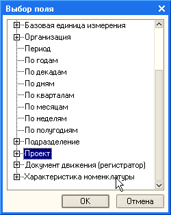
Установка Отборов отчета производится в таблице Отборы формы.
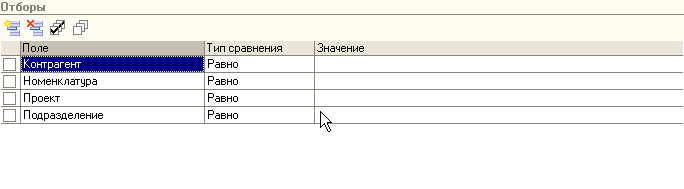
Активизация отбора производится установки элемента отбора. Отбор можно производить различными способами, которые устанавливаются в колонке Тип сравнения таблице отборов.
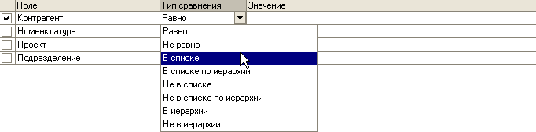
Значения. по которым устанавливается отбор отчета, устанавливаются нажатием кнопки . При типе сравнения отбора "В списке" список отбора задается в открывающейся форме, где производится подбор элементов списка по нажатию кнопки Подбор формы.
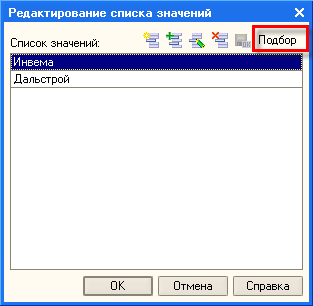
Оформление отчета можно изменить. Для этого необходимо установить расширенную форму настройки. Для этого надо установить флаг в соответствующем поле 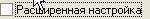. На закладке Оформление можно установить вариант оформления и задать условное оформление для полей отчета.
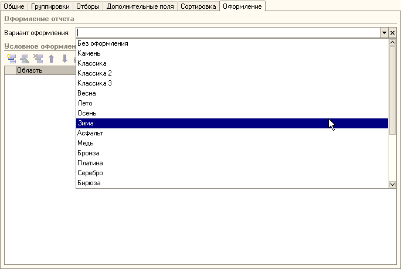
2. После установки настроек отчета нажмите кнопку 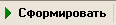 формы. После чего сформируется требуемый отчет по продажам
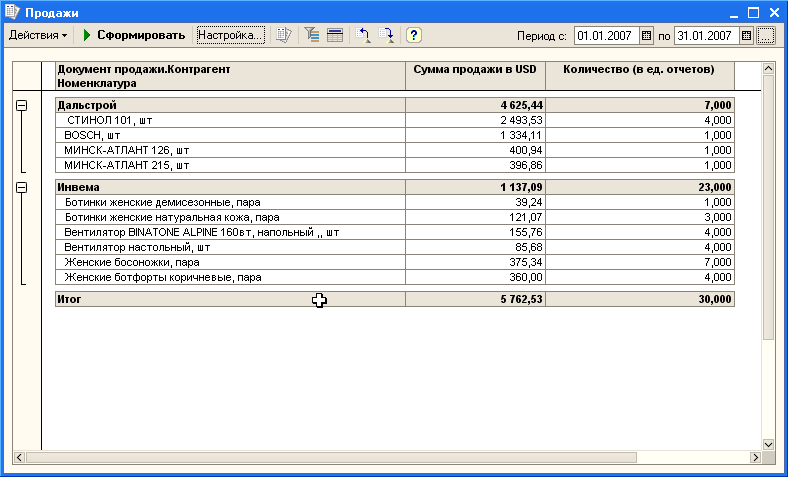
При необходимости, для более лучшего восприятия отчета, можно свернуть вложенные группировки как это показано на рисунке.
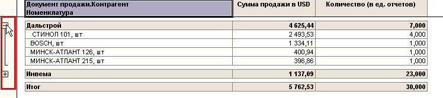
Настройки отчета можно сохранить. Для этого нажмите кнопку 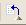. Откроется форма Сохранение настроек, в которой можно задать Наименование настройки, регулировать загрузку настройки при открытии отчета и автоматическое сохранение настроек при закрытии отчета, установить Пользователя данной сохраненной настройки.
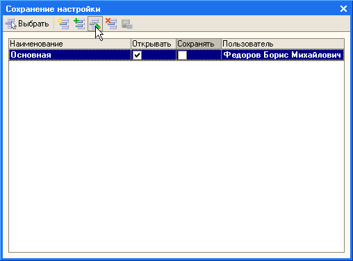
Теперь Вы научились настраивать отчеты для анализа деятельности торгового предприятия. Для анализа деятельности Вы можете использовать весь спектр отчетов, предоставляемый программой Управление торговлей.
Это заключительный раздел пособия.
Желаем Вам успешной и плодотворной работы с программой «Управление торговлей»!